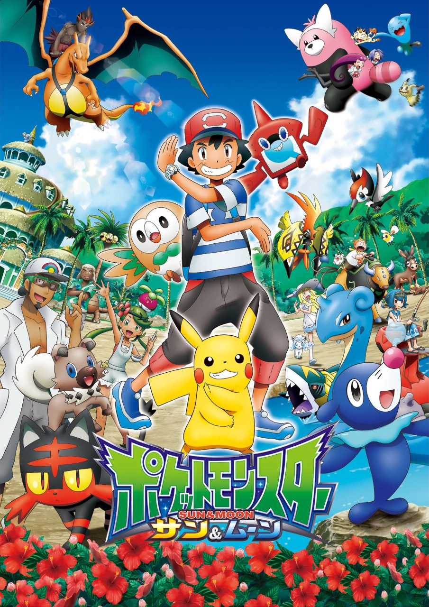

Pokémon Sol y Luna
Pokémon Sol y Luna es una de mis series favoritas por su ambientación en la región de Alola y por los personajes y Pokémon que aparecen durante la historia.
También es una serie especial para mí porque presenta a Litten, uno de mis Pokémon favoritos y porque la veia cuando era niño.